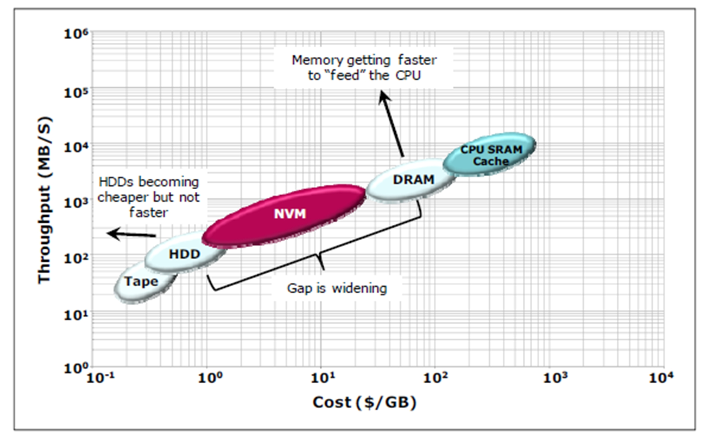
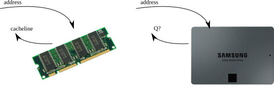
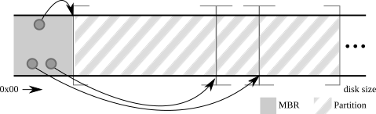
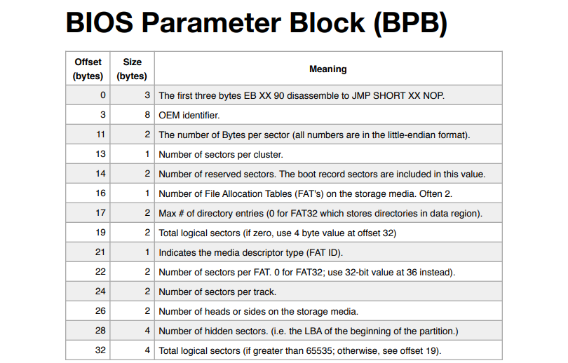
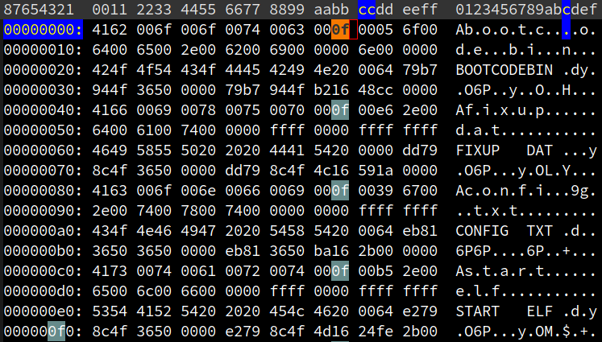
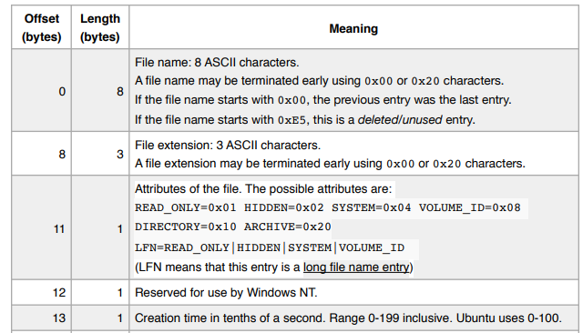
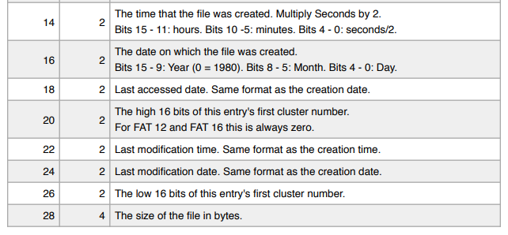

Fat32 Overview: Disk Layout
- Starts with (extended) BIOS Parameter Block (E/BPB)
- Followed by FAT (File Allocation Table)
- Followed by Cluster

Taesoo Kim
Taesoo Kim







Ref. Fat structs


pub trait FileSystem: Sized {
/// The type of files in this file system.
type File: File;
/// The type of directories in this file system.
type Dir: Dir<Entry = Self::Entry>;
/// The type of directory entries in this file system.
type Entry: Entry<File = Self::File, Dir = Self::Dir>;
/// Opens the entry at `path`. `path` must be absolute.
fn open<P: AsRef<Path>>(self, path: P) -> io::Result<Self::Entry>;
}/// Trait implemented by directories in a file system.
pub trait Dir: Sized {
/// The type of entry stored in this directory.
type Entry: Entry;
/// An type that is an iterator over the entries in this directory.
type Iter: Iterator<Item = Self::Entry>;
/// Returns an interator over the entries in this directory.
fn entries(&self) -> io::Result<Self::Iter>;
}/// An entry is either a `File` or a `Directory`
pub trait Entry: Sized {
type File: File; type Dir: Dir; type Metadata: Metadata;
/// The name of the file or directory corresponding to this entry.
fn name(&self) -> &str;
/// The metadata associated with the entry.
fn metadata(&self) -> &Self::Metadata;
/// If `self` is a file, returns `Some` of the file. Otherwise returns
/// `None`.
fn into_file(self) -> Option<Self::File>;
/// If `self` is a directory, returns `Some` of the directory. Otherwise
/// returns `None`.
fn into_dir(self) -> Option<Self::Dir>;
}/// Trait implemented by devices that can be read/written in sector
/// granularities.
pub trait BlockDevice: Send {
/// Read sector number `n` into `buf`.
fn read_sector(&mut self, n: u64, buf: &mut [u8]) -> io::Result<usize>;
/// Overwrites sector `n` with the contents of `buf`.
fn write_sector(&mut self, n: u64, buf: &[u8]) -> io::Result<usize>;
}